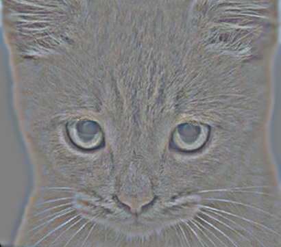

Project 1: Image Filtering and Hybrid Images
Let's start with image filtering first. Image filtering is a technique of applying various effects on photos. One can have lot of fun with image filters. For example, one can use an identity filter to replicate the exact same image, sobel filters can be used for detecting horizontal or vertical edges, a low pass filter can be used to remove high frequencies from an image,etc. In this project, we create our own imfilter called my_imfilter, which will be used lated for creating hybrid images. But before that let's look at few examples and see if there are any considerable differences between my_imfilter and imfilter(Matlab function):
| filter_name | my_imfilter | imfilter |
|---|---|---|
| Identity |  |
 |
| Laplacian |  |
|
| Light Blur |  |
 |
| Large Blur | ||
| Sobel |
my_imfilter implementation
Following section contains the code for my_imfilter implementation. This code will work for both greyscale and color images as number of dimensions have been handled appropriately. This implementation can handle varying filter sizes as well as no values have been hardcoded.
%example code
filter_length = size(filter,1); % get number of rows in filter
filter_width = size(filter,2); % get number of columns in filter
row_offset = (filter_length-1)/2; % get length or row offset
col_offset = (filter_width-1)/2; % get width or column offset
output = zeros(size(image)); % initialize the output image with zeroes
image = im2double(image); % increase precision
padsize = [(filter_length-1)/2 (filter_width-1)/2];
padded_image = padarray(image, padsize, 'symmetric'); % 'both' is set by default
image_length = size(padded_image,1); % get image length
image_width = size(padded_image,2); % get image width
for image_dim=1:size(padded_image,3)
for row=(filter_length+1)/2:image_length-row_offset
for col=(filter_width+1)/2:image_width-col_offset
dot_product = sum(filter.*padded_image(row-row_offset:row+row_offset,
col-col_offset:col+col_offset, image_dim));
output(row-row_offset,col-col_offset,image_dim)=sum(dot_product);
end
end
end
Hybrid Images
Please note that we had to choose a suitable frequency for each pair of images after experimentation.| Cut-Off Frequency | High frequency | Low frequency | Hybrid Masterpiece |
|---|---|---|---|
| 7 |  |  |
|
| 4 |  |
 |
|
| 3 | |||
| 3 | |||
| 8 |